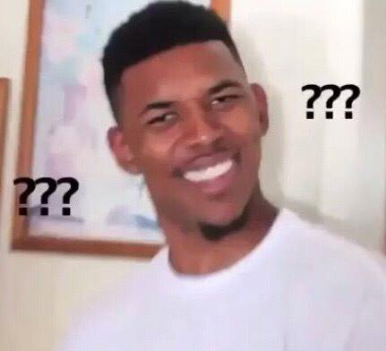

"Miss you, miss you, miss you." In this blog, I want to use some methods to achieve picture dyeing effect. What is dyeing effect? Just move your mouse on the picture below, if your browser is IE13+, you will see the effect. If not, don't be worry, I will also use some examples to introduce how to achieve this effect in IE9+!

Maybe you will say:" Come on, there are just two pictures". No! Just one picture, it means we should use CSS to control saturate and pixel of picture. We all know it's easy to do this using Canvas. However, as for CSS we should use "filter" or "blend-mode". And I will introduce three CSS methods and one JS(Canvas) method.
1. CSS methods
(1) Filter
This method only need an "img" label and use the code below, what you should know is that we use "sepia" and "saturate" to add saturation to the picture, and use "hue-rotate" to add fixed value to each pixel.
img {
transition:0.5s filter;
filter: sepia(1) saturate(2) hue-rotate(50deg);
}
img:hover, img:focus{
filter:none;
}
(2) Mix-blend-mode
When using this method, you should add a parent element to "img" label. The difference between "filter" and "blend-mode" is that "filter" changes the pixel value directly, but the "blend-mode" is using a method called color overlap, it means we should set a background color for the parent element, and set the img be blend mode. Let's see an example:
a {
background: hsl(335, 100%, 50%);
}
img {
mix-blend-mode: luminosity;
}
(3) Background-blend-mode
This method is similar with the above one. The only difference is we should put the picture as a bacnground picture into a "div" label.
div {
width: 640px;
height: 440px;
background-size: cover;
background-color: hsl(335, 100%, 50%);
background-blend-mode: luminosity;
transition: 0.5s background-color;
}
div:hover {
background-color: transparent;
}
So what's next?
Canvas!
2. Canvas method
Why do wo need Canvas? The CSS filter can only be supported by IE13+, for good compatibility, we need Canvas.
(1) Set canvas and img label
var img = new Image();
img.src = "../img/nyu.jpg";
var canvas = document.querySelector("canvas");
var context = canvas.getContext("2d");
img.onload = function(e){
context.drawImage(img, 0, 0, canvas.width, canvas.height);
}
(2) onmouseover
Remember we should use "mouseover" instead of "mouseenter", because we should emit the event on "canvas" label, not "img" label, and "mouseenter" event cannot add events to its children elements.
(If you try this effect, please put it in the server, because the "getimagedata" method of canvas need the Same Origin Policy)
canvas.onmouseover = function(e){
var c = context.getImageData(0, 0, canvas.width, canvas.height);
for(var i = 0; i < c.height; ++i){
for(var j = 0; j < c.width; ++j){
var x = i*4*c.width + 4*j,
r = c.data[x],
g = c.data[x+1],
b = c.data[x+2];
c.data[x+3] = 150;
c.data[x] = 255-r;
c.data[x+1] = 255-g;
c.data[x+2] = 255-b;
}
}
ctx.putImageData(c, 0, 0, canvas.width, canvas.height);
}
(3) onmouseout
Sure, we should use "mouseout" instead of "mouseleave". And the only difference is the opacity pixel in the picture.
canvas.onmouseover = function(e){
var c = context.getImageData(0, 0, canvas.width, canvas.height);
for(var i = 0; i < c.height; ++i){
for(var j = 0; j < c.width; ++j){
var x = i*4*c.width + 4*j,
r = c.data[x],
g = c.data[x+1],
b = c.data[x+2];
c.data[x+3] = 0; // Only difference
c.data[x] = 255-r;
c.data[x+1] = 255-g;
c.data[x+2] = 255-b;
}
}
ctx.putImageData(c, 0, 0, canvas.width, canvas.height);
}
(That's all)